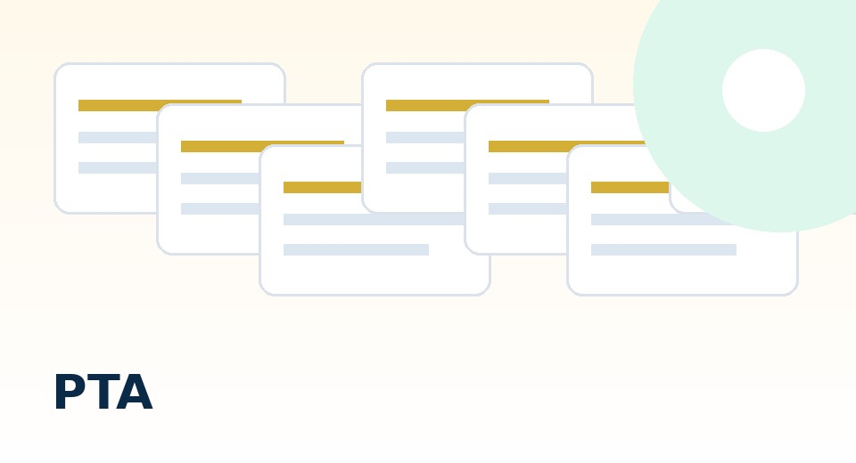

PTA適正化推進委員会
PTAを、任意加入・法令遵守・透明な会計へ。
入会、会費、個人情報、学校関与を、法令と一次資料から整理します。
PTA適正化推進委員会
PTAを、任意加入・法令遵守・透明な会計へ。
入会、会費、個人情報、学校関与を、法令と一次資料から整理します。
「入学したら全員PTAに入るもの」「会費は学校の引き落としと一緒」「役員は順番でやるもの」──この三つの「当たり前」は、日本国憲法・民法・個人情報保護法・地方公務員法の観点から、いずれも法的根拠を欠いています。
2025年のアンケート調査では、約6割の保護者がPTAへの加入を選択できないと感じています（School Voice Project調査）。PTAは法律上の任意団体であり、加入を強制する根拠はありません。2014年・2016年の裁判でも「PTAは入退会自由の任意加入団体」と法的に確認されています。
PTA適正化推進委員会は、日本で最も体系的なPTA法令整理サイトを目指しています。以下の点で他にない情報を提供します。


教育基本法第4条（教育の機会均等）の観点から、PTA加入の有無によって子どもの学校生活に不利益があってはなりません。授業・給食・学校行事・登校班の利用は、PTA加入と関係なく保障されるべきです。実際には記念品の配布やコサージュの提供など、PTA会費が使われるものについては扱いが異なる場合もありますが、それが学校行事の一部として実施されている場合は問題があります。
多くのPTAで見られる「みなし加入」「自動入会」の問題です。民法上、契約は申込みと承諾によって成立します（民法第522条）。入会申込書なしの会員扱いは、法的に問題がある可能性があります。PTAまたは学校へ入会申込記録の存在を確認し、記録がない場合は是正を求めることができます。
学校徴収金（教材費・給食費等）とPTA会費を同一の書面・口座で徴収するには、①PTAと学校の業務委託契約、②保護者の入会申込書への委任同意、③個人情報の提供同意、が揃っている必要があります。これらなしの一括徴収は、PTA加入が義務のような印象を与え、問題があります。
任意団体であるPTAを退会する権利は保護者が有しています。退会の申出は書面（退会届）で行い、控えを保管してください。退会を不当に拒否された場合や、退会後に子どもへの不利益措置があった場合は、教育委員会へ申し出ることができます。退会届のテンプレートを活用してください。
